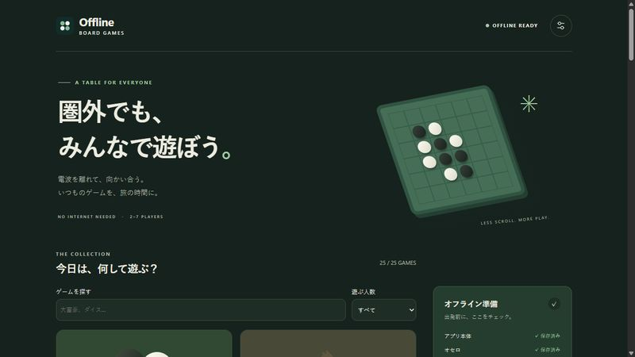
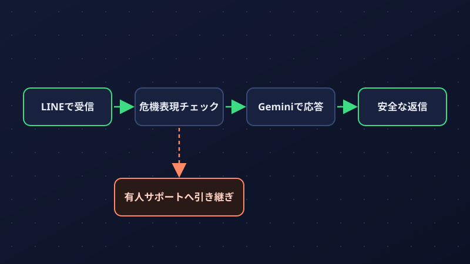
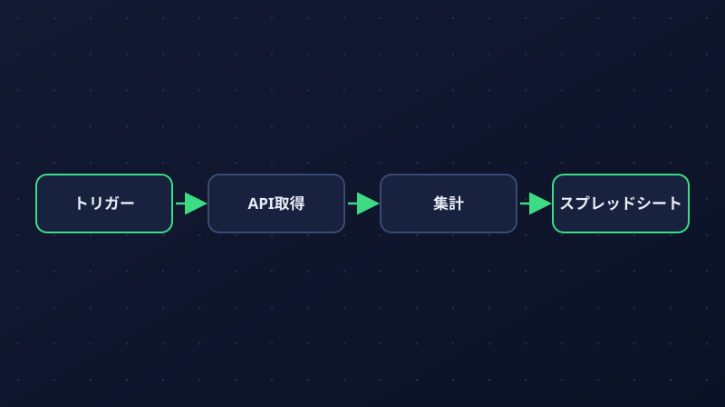
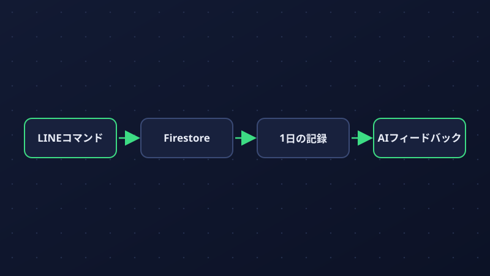
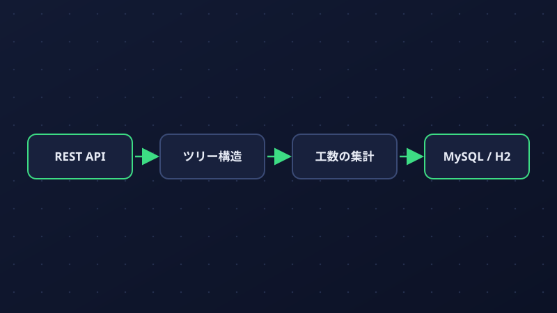

お手伝いできること
業務の自動化
n8nやPythonでツール同士をつなぎ、APIからデータを取得・整形して、Googleスプレッドシートやデータベースに定期的に書き込みます。
安全設計のチャットボット
Webhook署名を検証し、危険な表現はモデルに渡す前に検出、エラー時は安全な固定返信に切り替えるLINE / Geminiボット。
Webアプリとデータ分析
Next.js / React のWebアプリやPWA、Pythonでのデータ処理と分かりやすいグラフ化。
注目の実績

プロトタイプ・デモ
Deep Space Care — メンタルケアLINE Bot
危機的な表現をモデルに渡す前に検出し、有人サポートへ引き継ぐGeminiチャットボット。
- 課題
- 閉鎖・隔離され通信遅延の大きい環境のクルーは、気持ちの面での一次対応を地上の支援に頼れない。また、危機的な状態の人に対してチャットボットが即興で答えてはならない。
- 解決方法
- Geminiで「共感・小さなセルフケア・質問」を返すLINE Bot。文章がモデルに渡る前に危機表現を検出して有人サポートへ引き継ぎ、タイムアウト時は固定の返信に切り替える。WebhookはHMAC-SHA256で署名検証。
- Python
- FastAPI
- LINE Messaging API
- Gemini API
- SQLite
- pytest
- Docker

その他のプロジェクト

サンプル・デモ用リポジトリ
自動化のデモ
再利用できるn8nのレシピと、APIのデータをGoogleスプレッドシートに集計するPythonスクリプト。
課題と解決方法
- 課題
- ツールやスプレッドシートの間のコピー＆ペーストに、毎日何時間も取られてしまう。
- 解決方法
- 認証情報を取り除いた再利用しやすいn8nワークフローのレシピと、APIのデータを集計してGoogleスプレッドシートに書き込むPythonスクリプト。
- n8n
- Python
- gspread
- REST APIs

個人用ツール
Task Logger LINE Bot
LINEから作業時間を記録し、AIのフィードバック付きで1日を振り返る。
課題と解決方法
- 課題
- 時間の記録はつい忘れてしまう。普段使っているチャットの中で記録できるのが理想。
- 解決方法
- LINEの短いコマンドでタスクをFirestoreに記録し、AIのフィードバック付きで1日のタイムラインを作成。記録が途切れると30分パトロールが警告する。
- Python
- Flask
- LINE Messaging API
- Gemini
- Firestore

個人プロジェクト
HAND DODGE+ — Webカメラゲーム
普通のWebカメラの前で手を動かして操作する回避ゲーム。
課題と解決方法
- 課題
- 普通のWebカメラが、遅延の少ない実用的なゲームコントローラーになるかを確かめる。
- 解決方法
- MediaPipeの手のランドマークから、なめらかに補正した左右の操作を作成。コンボ制のスコア、3つの難易度、ユニットテスト済みのゲームロジック。
- Python
- OpenCV
- MediaPipe
- NumPy

個人プロジェクト
Hand Target Shooter
指先で狙い、指をすばやく伸ばしたときだけ撃つ。誤発射しないハンドトラッキング。
課題と解決方法
- 課題
- ハンドトラッキングで「狙う」と「撃つ」を分け、手を動かしただけでは発射しないようにする。
- 解決方法
- 照準は指先に追従。指の軸に沿って指先が素早く伸びたときだけ発射し、クールダウンと「指を戻す」判定で誤発射を防ぐ。
- Python
- OpenCV
- MediaPipe
- pytest
デスクトップアプリ
PixelLab — 写真をドット絵に
写真から、ドット絵のゲーム背景・スプライト・タイルをPC内だけで作成。
課題と解決方法
- 課題
- 写真からレトロなゲーム背景を手作業で作るのは、初心者には時間がかかる。
- 解決方法
- 写真を減色・拡大してドット絵、ゲーム背景（昼・夕暮れ・夜）、スプライト、シームレスタイルを作るTkinterのGUI。処理はすべてPC内で完結。
- Python
- Pillow
- Tkinter

バックエンド（公開環境は停止済み）
ゲーム制作タスクボード
ツリー構造のタスクと、合計工数を自動で集計するREST API。
課題と解決方法
- 課題
- 平らなToDoリストでは、タスクの親子関係と合計工数が見えにくい。
- 解決方法
- ツリー構造のタスクと、工数を再帰的に集計するサービス、REST API。データベースはH2とMySQLを切り替え可能。
- Java 21
- Spring Boot
- Spring Data JPA
- MySQL / AWS RDS
スキル
自動化・AI
- n8n
- Python
- REST API
- Gemini API
- LINE Messaging API
- Googleスプレッドシート（gspread）
バックエンド
- FastAPI
- Flask
- Spring Boot（Java 21）
- Firebase / Firestore
- Supabase
- SQLite / MySQL
フロントエンド
- React
- TypeScript
- Next.js
- Tailwind CSS
- PWA / Service Worker
- WebRTC
データ・画像処理
- pandas
- NumPy
- OpenCV
- MediaPipe
- Pillow
- pytest